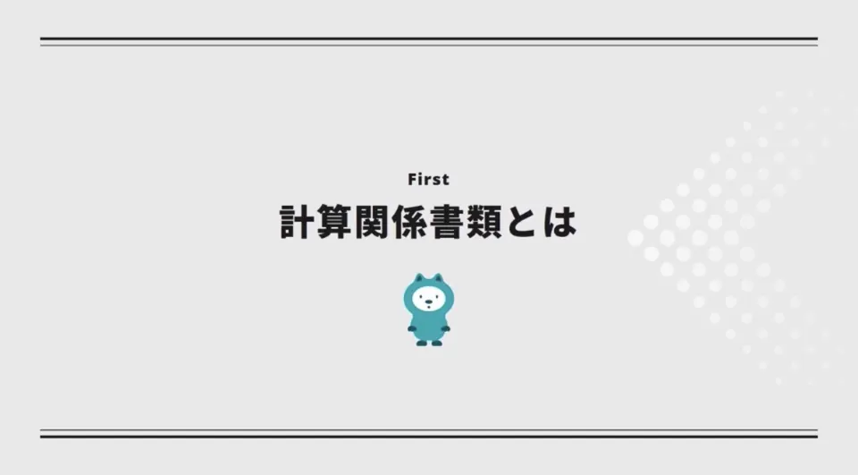
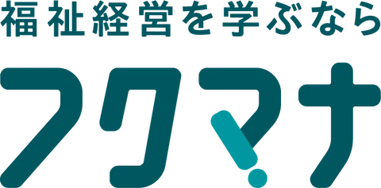
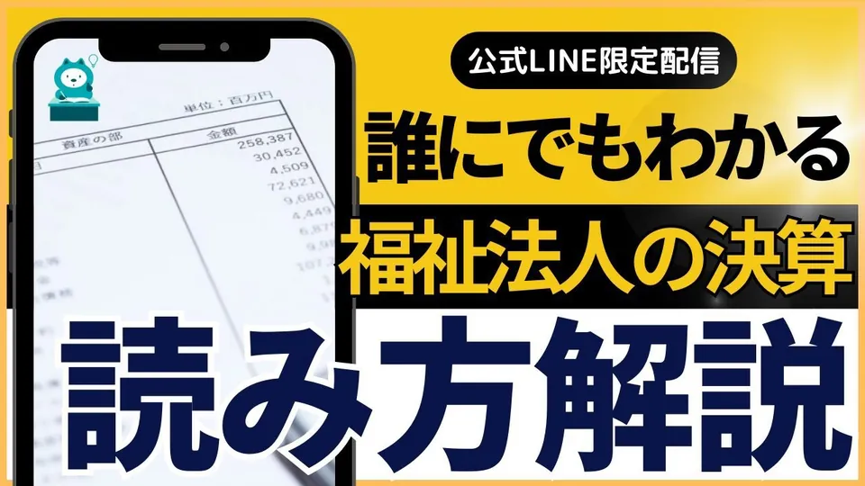
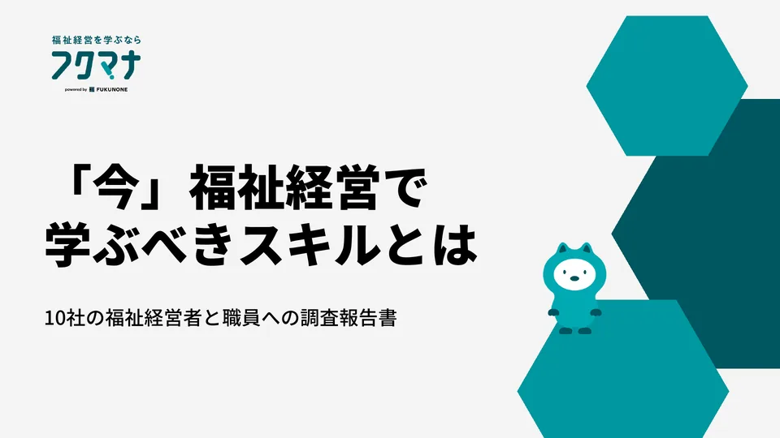
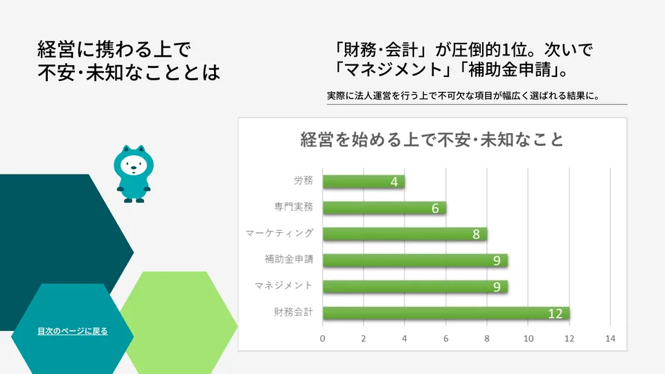
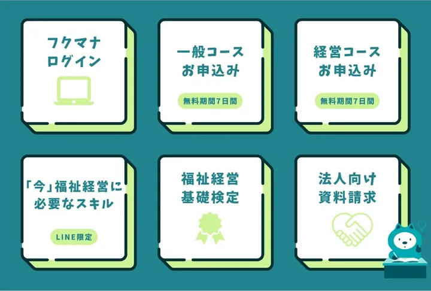

特典1｜特別講義（動画）
誰にでもわかる
福祉法人の決算 読み方解説
福祉法人の決算書の読み方を、4つのセクションで解説するLINE限定の特別講義です。
- 計算関係書類とは（法人のお金の動きと財産の状況をまとめた書類一式）
- 事業活動計算書とは（1年間の収益と費用をまとめた書類。一般企業の損益計算書にあたる）
- 貸借対照表とは（ある時点の資産・負債・純資産をまとめた書類）
- 貸借対照表と事業活動計算書の関係性

LINEで受け取る保育・介護・障がい福祉の開業準備に
フクマナ公式LINEの友だち追加で、
2つの特典を無料で公開中。

特典1特別講義
福祉法人の決算
読み方解説

特典2リサーチ資料
「今」福祉経営で
学ぶべきスキルとは
友だち追加は無料・いつでもブロックできます
経営に携わる上で
不安・未知なこと
1位は「財務・会計」
出典：フクマナ「『今』福祉経営で学ぶべきスキルとは」（保育・介護・障がい福祉分野の福祉職員80名への調査）
「知らない」ことが、挑戦のブレーキになっていませんか。
まずは数字の読み方と、今学ぶべきことの全体像から整理しましょう。
LINE登録で受け取れる

特典1｜特別講義（動画）
福祉法人の決算書の読み方を、4つのセクションで解説するLINE限定の特別講義です。

特典2｜リサーチ資料（全19ページ）
保育・介護・障がい福祉分野の福祉経営者10社と福祉職員80名への調査をまとめた報告書です。
友だち追加は無料・いつでもブロックできます
受け取りまで3ステップ
STEP 1
このページのボタンから、フクマナ公式LINEを友だち追加します。
STEP 2
あいさつメッセージが届きます。トークで「講義を視聴する」と送ると、特別講義を視聴できます。
はじめまして！フクマナです。友だち追加ありがとうございます。
まずはLINE限定特典として特別講義をプレゼント。「講義を視聴する」とメッセージを送ると、自動で視聴いただけます。
講義を視聴する
※トーク画面のイメージです
STEP 3
トーク画面下のメニューにある「『今』福祉経営に必要なスキル」ボタンから、リサーチ資料を読めます。

フクマナとは
フクマナは、福祉経営に必須なスキルを隙間時間で学べるオンラインスクールです。学習内容は、現役の福祉経営者が選ぶ「今学ぶべき」項目と、福祉経営を志す方が「不安に感じる」項目から選定しています。
各章の講義受講と復習ドリルの満点獲得で、「福祉経営基礎検定」の認定証を発行します。
開業を目指す方向け
経営コースは、実際に福祉事業を開業することを目的としたコースです。eラーニングでの学習に加えて、起業に向けた悩みを個別に相談できます。
7つの知識を、好きな時間・好きな場所で。学習の進み具合も自分で確認できます。
一人では挫折しがちな学習も、双方向のやり取りで続けやすく。起業に向けた悩みを個別に相談できます。
起業を目指す場合は、将来の事業計画の策定も、当社代表が経営視点・金融機関視点からサポートします。
将来的に起業したいという想いがあるので、今の仕事をしながら少しずつ一緒に準備できる点が良いです。経営コースだとLINEで色々相談に乗ってもらえるのも安心できます。
20代男性
はい。LINEの友だち追加と、2つの特典（特別講義・リサーチ資料）の受け取りに料金はかかりません。
友だち追加後、トークで「講義を視聴する」と送ると特別講義を視聴できます。リサーチ資料は、トーク画面下のメニューにある「『今』福祉経営に必要なスキル」ボタンから読めます。
フクマナは、業界未経験の方も理解できるように、各事業の内容から学習できる構成です。事前の知識がなくても学べます。
特典のご案内のほか、福祉経営に役立つ情報やフクマナからのお知らせをお届けします。不要になった場合は、LINEのブロック機能でいつでも受信を止められます。
一般コース・経営コースの料金は、フクマナ公式サイトの料金ページでご確認いただけます。どちらのコースにも7日間の無料体験があります。特典を受け取っただけで料金が発生することはありません。